wmtask_epoch_compare_partialobs16_pcaautodim_cayley_perconditionnorm__ndelays_sweepProject: WMTask_identity_encoder_verification
Launched: 2026-05-05T03:10:18Z
Completed: 2026-05-05T04:40:19Z
Outcome: complete_clean
Git: latent-JacobianODE @ 8d8de88
Expected runs: 5
wmtask_epoch_compare_partialobs16_pcaautodim_cayley_perconditionnorm__ndelays_sweepDescription
WMTask conditioned (epoch=1 vs final) partial-obs n_delays scout. Combined loader + 16-random-channel-per-area partial obs (seed=42, same channels both conditions). Per-area PCA-99 autodim + Cayley orthogonal mixers + near-identity init + TF-coupled LR + split-mode loss. Per-condition normalization. Two-stage: 5-cell n_delays sweep at Stage A (short, 20 ep), survivors resumed to full convergence at Stage B (200 ep). LC=0 throughout (kept clean for n_delays scouting).
Hypothesis
n_delays controls how much state info delay-embedding can recover from 16 obs per area. The scout identifies the n_delays that gives the cleanest dynamics under conditioning; survivors carry into the Stage B convergence and become the candidates for downstream LC× obs_noise grids.
Success criteria
Swept axes (7): data.postprocessing.generalized_variance, data.train_test_params.delay_embedding_params.n_delays, model.n_target_dims, model.n_target_dims_per_block_pca_auto, model.n_target_dims_per_block_pca_cum_var, model.params.input_dim, model.params.output_dim
Chosen run (by best_traj_loss): n08vuuf7 — traj_loss=0.00413, MASE=0.6037, R²=0.9958, LC loss=48.634, epoch=37.0
Swept-axis values at chosen run: data.postprocessing.generalized_variance=0.0244588 · data.train_test_params.delay_embedding_params.n_delays=6 · model.n_target_dims=29 · model.n_target_dims_per_block_pca_auto=[17, 12] · model.n_target_dims_per_block_pca_cum_var=[0.9902608766168366, 0.9919741165444236] · model.params.input_dim=29 · model.params.output_dim=841
Runs analyzed: 5 (expected 5)
| run_idx | run_id | data.postprocessing.generalized_variance |
data.train_test_params.delay_embedding_params.n_delays |
model.n_target_dims |
model.n_target_dims_per_block_pca_auto |
model.n_target_dims_per_block_pca_cum_var |
model.params.input_dim |
model.params.output_dim |
best_traj_loss | best_MASE | R² | LC loss | epoch |
|---|---|---|---|---|---|---|---|---|---|---|---|---|---|
| 1 | n08vuuf7 |
0.0244588 | 6 | 29 | [17, 12] | [0.9902608766168366, 0.9919741165444236] | 29 | 841 | 0.00413 | 0.6037 | 0.9958 | 48.634 | 37.0 |
| 0 | sap955z9 |
0.0244588 | 3 | 23 | [13, 10] | [0.9900657051938336, 0.9900459248222068] | 23 | 529 | 0.00438 | 0.6202 | 0.9953 | 39.177 | 41.0 |
| 2 | hqed9eg9 |
0.0244588 | 9 | 33 | [20, 13] | [0.9901722465285276, 0.9905418872477084] | 33 | 1089 | 0.00531 | 0.6760 | 0.9945 | 52.744 | 13.0 |
| 3 | nheqz1ez |
0.0244588 | 12 | 37 | [23, 14] | [0.9902654313095508, 0.990024507336198] | 37 | 1369 | 0.00574 | 0.7026 | 0.9942 | 54.505 | 12.0 |
| 4 | 9dz81tez |
0.0244588 | 15 | 41 | [25, 16] | [0.9900411020927828, 0.9907630722157746] | 41 | 1681 | 0.00624 | 0.7306 | 0.9939 | 52.071 | 16.0 |
| Criterion | Verdict | Note |
|---|---|---|
| All 5 Stage A cells train without divergence (no NaN train loss) | Unknown | |
| Per-area autodim n_target_dims logged for each n_delays cell | Unknown | |
| Two_stage_cull keeps top survivors (cull_fraction=0.5) | Unknown | |
| Stage B winner: best val traj_loss within 5x of full-obs Cayley conditioned winner (~0.005 from epoch_compare_perconditionnorm) | Unknown |
Automated verdicts use simple numeric-threshold parsing and may mis-classify qualitative criteria. The Discussion section below takes precedence.
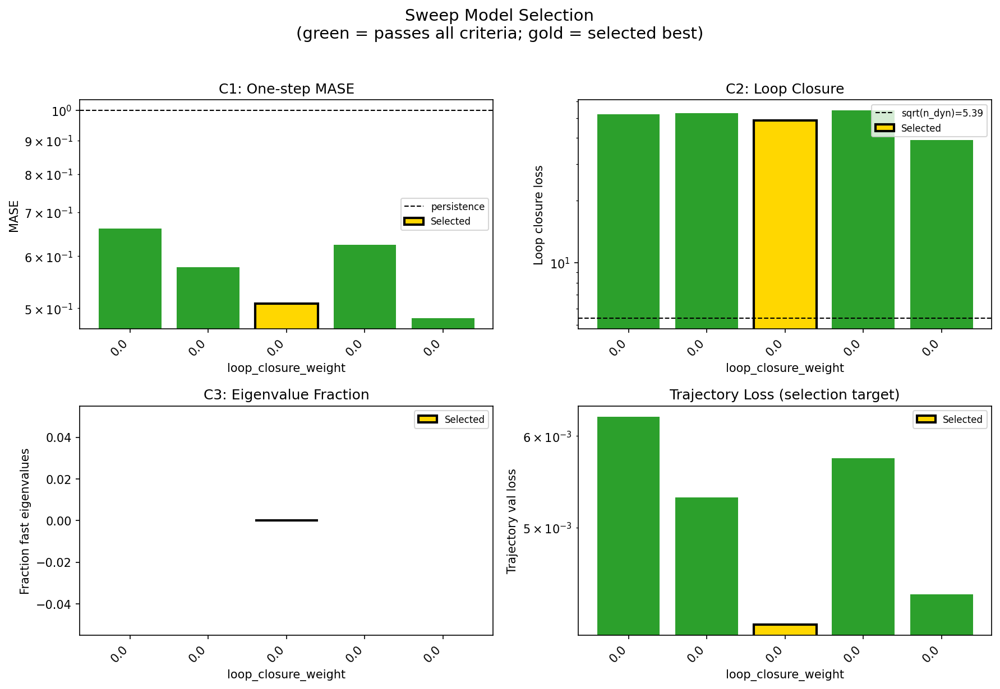
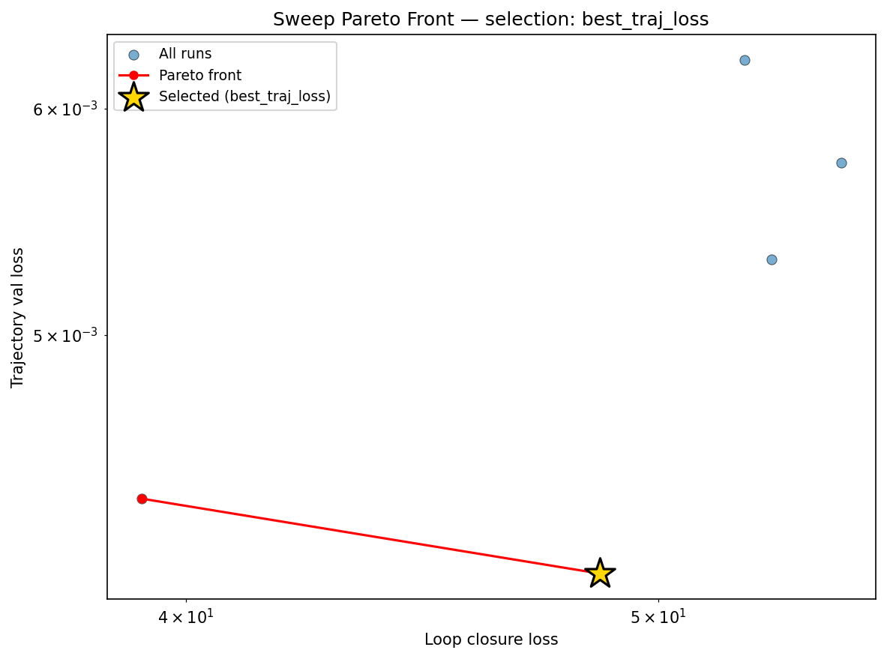
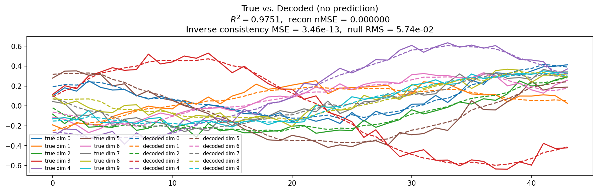
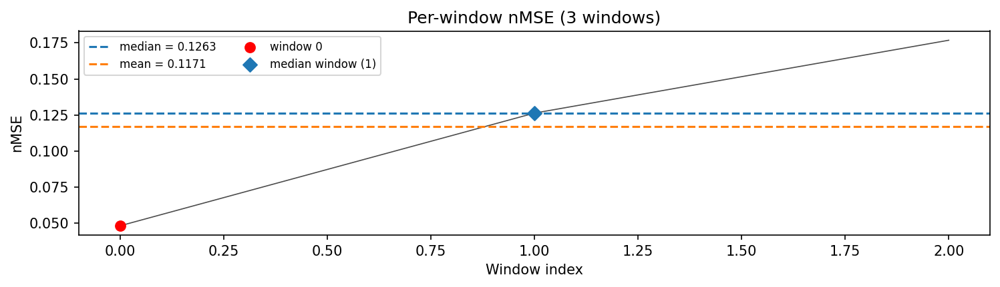
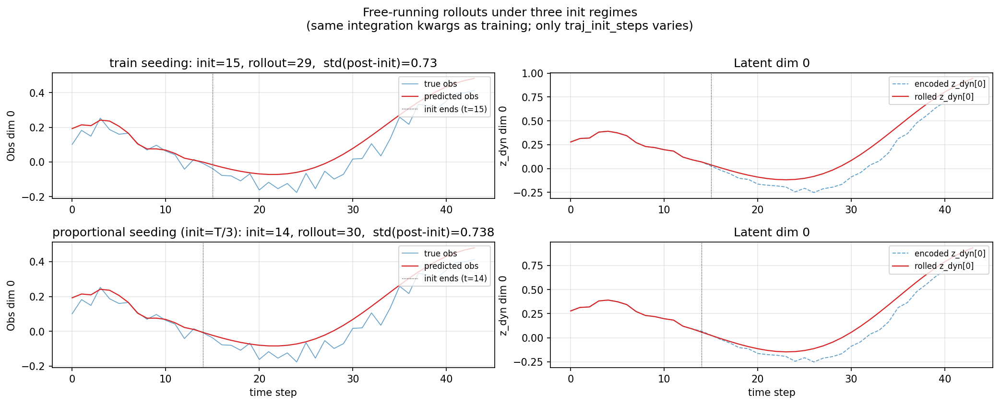
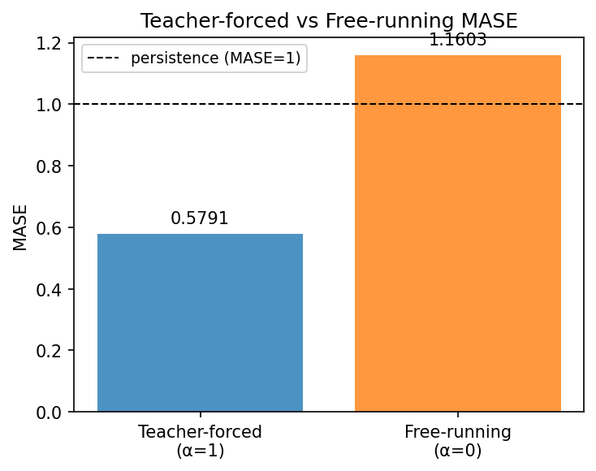
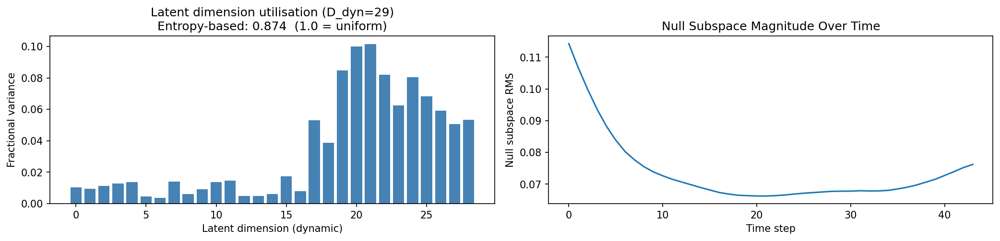
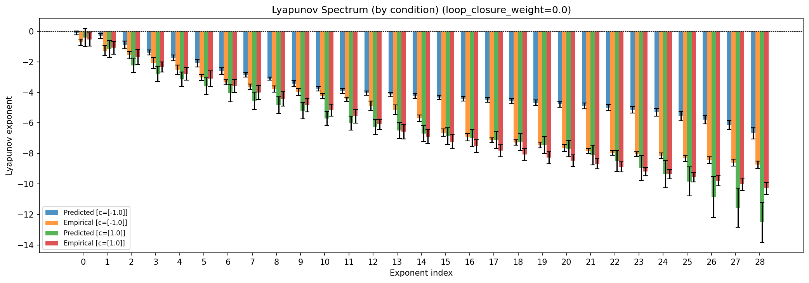
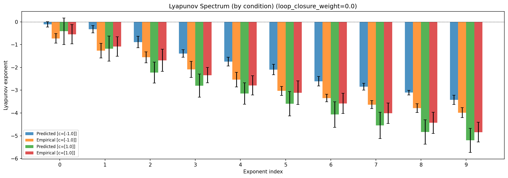
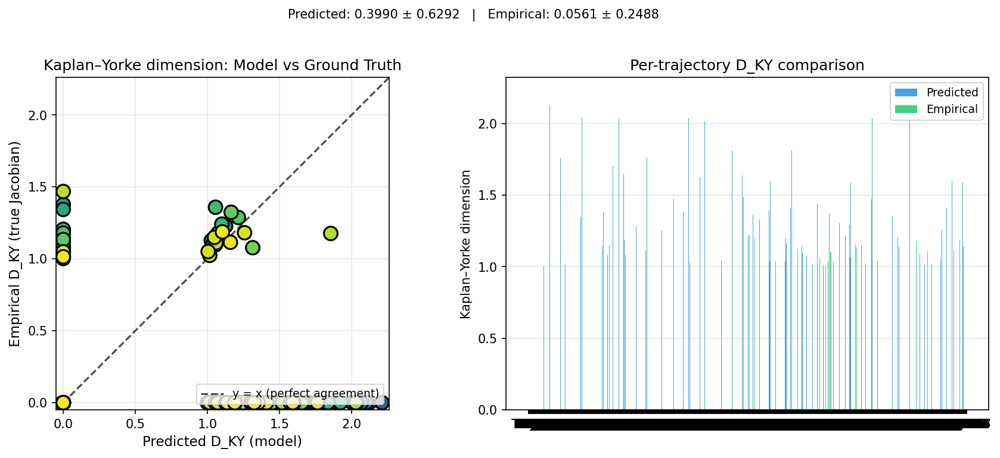
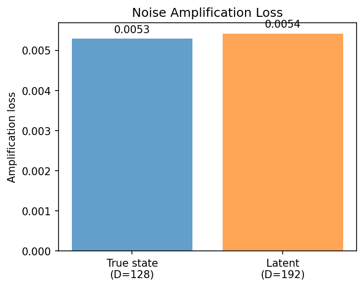
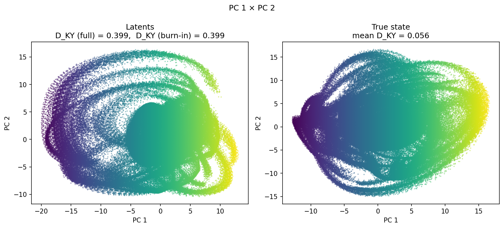
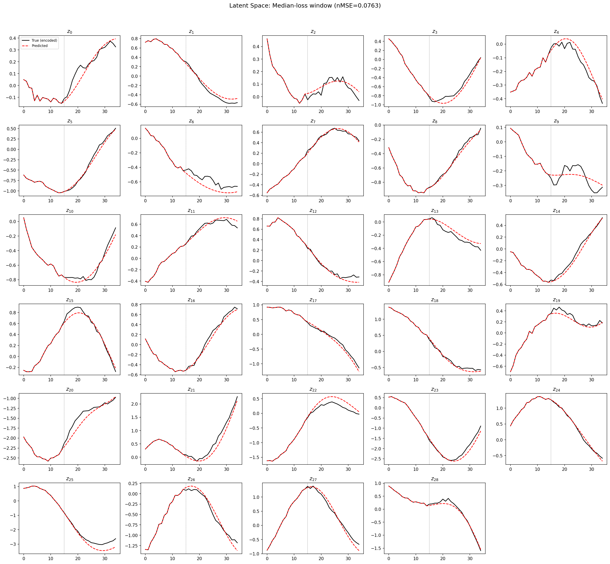
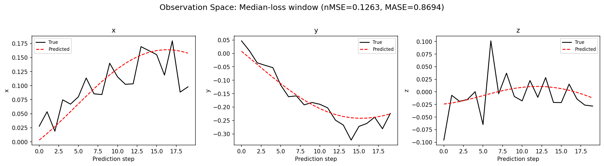
(to be written)
run_analytics stdoutrun_analyticsNo run_id provided — selecting best run from group 'wmtask_epoch_compare_partialobs16_pcaautodim_cayley_perconditionnorm__ndelays_sweep' ...
Found 5 total runs in JacobianODE/WMTask_identity_encoder_verification (group=wmtask_epoch_compare_partialobs16_pcaautodim_cayley_perconditionnorm__ndelays_sweep)
All runs (state, loop_closure_weight, tangent_entropy_weight, kl_dyn_weight):
n08vuuf7: state=finished, lc=0.0, te=0.0, kl_dyn=0.0
sap955z9: state=finished, lc=0.0, te=0.0, kl_dyn=0.0
hqed9eg9: state=finished, lc=0.0, te=0.0, kl_dyn=0.0
nheqz1ez: state=finished, lc=0.0, te=0.0, kl_dyn=0.0
9dz81tez: state=finished, lc=0.0, te=0.0, kl_dyn=0.0
slurm_timeout_min not found in any run config — falling back to 180 min
Including n08vuuf7 (lc=0.0): use_all_runs=True (state=finished)
Including sap955z9 (lc=0.0): use_all_runs=True (state=finished)
Including hqed9eg9 (lc=0.0): use_all_runs=True (state=finished)
Including nheqz1ez (lc=0.0): use_all_runs=True (state=finished)
Including 9dz81tez (lc=0.0): use_all_runs=True (state=finished)
Found 5 effectively-done sweep runs:
loop_closure_weight=0.0, tangent_entropy_weight=0.0, kl_dyn_weight=0.0 -> run_id=9dz81tez
loop_closure_weight=0.0, tangent_entropy_weight=0.0, kl_dyn_weight=0.0 -> run_id=hqed9eg9
loop_closure_weight=0.0, tangent_entropy_weight=0.0, kl_dyn_weight=0.0 -> run_id=n08vuuf7
loop_closure_weight=0.0, tangent_entropy_weight=0.0, kl_dyn_weight=0.0 -> run_id=nheqz1ez
loop_closure_weight=0.0, tangent_entropy_weight=0.0, kl_dyn_weight=0.0 -> run_id=sap955z9
loaded wmtask RNN model checkpoint 1
Loading cached wmtask hiddens from /orcd/data/ekmiller/001/eisenaj/ControlJacobians/WMTaskModels/WMSelectionTask__cue_time_0.1__response_time_0.25__enforce_fixation_False/BiologicalRNN__cue_time_0.1__learning_rate_0.0005__max_epochs_42__N1_64__N2_64__tau_0.05__dt_0.02__eig_lower_bound_0.1__init_mode_random/_jacobianode_cache/hiddens__all__epoch1__trials4096__seed42.pt
loaded wmtask RNN model checkpoint 41
Loading cached wmtask hiddens from /orcd/data/ekmiller/001/eisenaj/ControlJacobians/WMTaskModels/WMSelectionTask__cue_time_0.1__response_time_0.25__enforce_fixation_False/BiologicalRNN__cue_time_0.1__learning_rate_0.0005__max_epochs_42__N1_64__N2_64__tau_0.05__dt_0.02__eig_lower_bound_0.1__init_mode_random/_jacobianode_cache/hiddens__all__epoch41__trials4096__seed42.pt
n_dims=480, n_latent=480, n_dyn=41, dt=0.0200
run=9dz81tez: DiagnosticMetrics(one_step_mase=0.6605804562568665, loop_closure_loss=52.0706672668457, fast_eigenvalue_fraction=0.0, trajectory_val_loss=0.00623670406639576) (from W&B history)
run=hqed9eg9: DiagnosticMetrics(one_step_mase=0.5773367285728455, loop_closure_loss=52.74424743652344, fast_eigenvalue_fraction=0.0, trajectory_val_loss=0.005313307046890259) (from W&B history)
run=n08vuuf7: DiagnosticMetrics(one_step_mase=0.5083292722702026, loop_closure_loss=48.633628845214844, fast_eigenvalue_fraction=0.0, trajectory_val_loss=0.004126054234802723) (from W&B history)
run=nheqz1ez: DiagnosticMetrics(one_step_mase=0.6249555349349976, loop_closure_loss=54.50490188598633, fast_eigenvalue_fraction=0.0, trajectory_val_loss=0.0057417405769228935) (from W&B history)
run=sap955z9: DiagnosticMetrics(one_step_mase=0.48291122913360596, loop_closure_loss=39.177459716796875, fast_eigenvalue_fraction=0.0, trajectory_val_loss=0.004382354207336903) (from W&B history)
Ranking method: best_traj_loss
Best run ID: n08vuuf7
Best loop_closure_weight: 0.0
Best tangent_entropy_weight: 0.0
Best kl_dyn_weight: 0.0
Best traj loss: 0.004126
Criteria applied: ['C1', 'C3']
Surviving: 5 / 5
Auto-selected run_id: n08vuuf7
======================================================================
PARETO FRONTIER RUNS (2 runs)
======================================================================
Run ID LC Loss Traj Val Loss
------------ -------------- --------------
sap955z9 39.177460 0.004382
n08vuuf7 48.633629 0.004126 <-- selected
======================================================================
RANKING METHOD COMPARISON (over 5 survivors)
======================================================================
Method Run ID LC Loss Traj Val Loss
---------------------- ------------ -------------- --------------
best_traj_loss n08vuuf7 48.633629 0.004126 <-- active
pareto_knee sap955z9 39.177460 0.004382
geo_rank n08vuuf7 48.633629 0.004126
minimax_rank n08vuuf7 48.633629 0.004126
geo_log_score n08vuuf7 48.633629 0.004126
minimax_log_score sap955z9 39.177460 0.004382
======================================================================
Loading run n08vuuf7 from JacobianODE/WMTask_identity_encoder_verification ...
loaded wmtask RNN model checkpoint 1
Loading cached wmtask hiddens from /orcd/data/ekmiller/001/eisenaj/ControlJacobians/WMTaskModels/WMSelectionTask__cue_time_0.1__response_time_0.25__enforce_fixation_False/BiologicalRNN__cue_time_0.1__learning_rate_0.0005__max_epochs_42__N1_64__N2_64__tau_0.05__dt_0.02__eig_lower_bound_0.1__init_mode_random/_jacobianode_cache/hiddens__all__epoch1__trials4096__seed42.pt
loaded wmtask RNN model checkpoint 41
Loading cached wmtask hiddens from /orcd/data/ekmiller/001/eisenaj/ControlJacobians/WMTaskModels/WMSelectionTask__cue_time_0.1__response_time_0.25__enforce_fixation_False/BiologicalRNN__cue_time_0.1__learning_rate_0.0005__max_epochs_42__N1_64__N2_64__tau_0.05__dt_0.02__eig_lower_bound_0.1__init_mode_random/_jacobianode_cache/hiddens__all__epoch41__trials4096__seed42.pt
Loading checkpoint epoch=37-step=4750.ckpt...
Loading checkpoint epoch=37-step=4750.ckpt...
Computing reconstruction ...
Computing MASE ...
Teacher-forced MASE: 0.5791
Free-running MASE: 1.1603
Computing latent utilization ...
Entropy-based utilization: 0.874
Null subspace mean RMS: 7.443845e-02
Computing Lyapunov exponents ...
Computing full-trajectory Lyapunov (818 test trajs, T=44) ...
Predicted Lyapunov exponents (batch+burn-in, 128 windowed trajs):
λ_1 = -0.2605 ± 0.4470
λ_2 = -0.7454 ± 0.5904
λ_3 = -1.5555 ± 0.7671
λ_4 = -2.0942 ± 0.7999
λ_5 = -2.4464 ± 0.7859
λ_6 = -2.8446 ± 0.8556
λ_7 = -3.3375 ± 0.8445
λ_8 = -3.6967 ± 0.9507
λ_9 = -3.9695 ± 0.9486
λ_10 = -4.3096 ± 0.9761
λ_11 = -4.7320 ± 1.0273
λ_12 = -4.9625 ± 1.1020
λ_13 = -5.1583 ± 1.1719
λ_14 = -5.3207 ± 1.2341
λ_15 = -5.4679 ± 1.2937
λ_16 = -5.5931 ± 1.3262
λ_17 = -5.7021 ± 1.3603
λ_18 = -5.8151 ± 1.3817
λ_19 = -5.9142 ± 1.4070
λ_20 = -6.0690 ± 1.4438
λ_21 = -6.2300 ± 1.5020
λ_22 = -6.4908 ± 1.6809
λ_23 = -6.7463 ± 1.8178
λ_24 = -7.0436 ± 1.9943
λ_25 = -7.3238 ± 2.1271
λ_26 = -7.6924 ± 2.2539
λ_27 = -8.3142 ± 2.7185
λ_28 = -8.8431 ± 2.8658
λ_29 = -9.5944 ± 3.0674
Predicted Lyapunov exponents (full-length, 818 test trajs):
λ_1 = -0.2605 ± 0.4470
λ_2 = -0.7454 ± 0.5904
λ_3 = -1.5555 ± 0.7671
λ_4 = -2.0942 ± 0.7999
λ_5 = -2.4464 ± 0.7859
λ_6 = -2.8446 ± 0.8556
λ_7 = -3.3375 ± 0.8445
λ_8 = -3.6967 ± 0.9507
λ_9 = -3.9695 ± 0.9486
λ_10 = -4.3096 ± 0.9761
λ_11 = -4.7320 ± 1.0273
λ_12 = -4.9625 ± 1.1020
λ_13 = -5.1583 ± 1.1719
λ_14 = -5.3207 ± 1.2341
λ_15 = -5.4679 ± 1.2937
λ_16 = -5.5931 ± 1.3262
λ_17 = -5.7021 ± 1.3603
λ_18 = -5.8151 ± 1.3817
λ_19 = -5.9142 ± 1.4070
λ_20 = -6.0690 ± 1.4438
λ_21 = -6.2300 ± 1.5020
λ_22 = -6.4908 ± 1.6809
λ_23 = -6.7463 ± 1.8178
λ_24 = -7.0436 ± 1.9943
λ_25 = -7.3238 ± 2.1271
λ_26 = -7.6924 ± 2.2539
λ_27 = -8.3142 ± 2.7185
λ_28 = -8.8431 ± 2.8658
λ_29 = -9.5944 ± 3.0674
Empirical Lyapunov exponents (mean ± std, all trajectories):
λ_1 = -0.6353 ± 0.3465
λ_2 = -1.1737 ± 0.3881
λ_3 = -1.6231 ± 0.3900
λ_4 = -2.2124 ± 0.3684
λ_5 = -2.6625 ± 0.3953
λ_6 = -3.0691 ± 0.3950
λ_7 = -3.4613 ± 0.3543
λ_8 = -3.8197 ± 0.3905
λ_9 = -4.1081 ± 0.4824
λ_10 = -4.4143 ± 0.5487
λ_11 = -4.7030 ± 0.5551
λ_12 = -5.0074 ± 0.6444
λ_13 = -5.4875 ± 0.6903
λ_14 = -5.8604 ± 0.8181
λ_15 = -6.2924 ± 0.6951
λ_16 = -6.9284 ± 0.4605
λ_17 = -7.2216 ± 0.4465
λ_18 = -7.4797 ± 0.4574
λ_19 = -7.6652 ± 0.4995
λ_20 = -7.8578 ± 0.5279
λ_21 = -8.0532 ± 0.5162
λ_22 = -8.2598 ± 0.4827
λ_23 = -8.4152 ± 0.5256
λ_24 = -8.6150 ± 0.6191
λ_25 = -8.7509 ± 0.6531
λ_26 = -8.9435 ± 0.6761
λ_27 = -9.1106 ± 0.7327
λ_28 = -9.3066 ± 0.7789
λ_29 = -9.5068 ± 0.8401
λ_30 = -9.6792 ± 0.8841
λ_31 = -9.9201 ± 0.9749
λ_32 = -10.1668 ± 1.0064
λ_33 = -10.5224 ± 1.1476
λ_34 = -10.9142 ± 1.3092
λ_35 = -11.4060 ± 1.1424
λ_36 = -11.8052 ± 1.1426
λ_37 = -12.2050 ± 1.1134
λ_38 = -12.5768 ± 1.1176
λ_39 = -12.8330 ± 1.1696
λ_40 = -13.0615 ± 1.1851
λ_41 = -13.3863 ± 1.2057
λ_42 = -13.7144 ± 1.1818
λ_43 = -14.1195 ± 1.1784
λ_44 = -14.5715 ± 1.1662
λ_45 = -15.0996 ± 1.2147
λ_46 = -16.2075 ± 1.1518
λ_47 = -17.5372 ± 0.6701
λ_48 = -18.1930 ± 0.5876
λ_49 = -18.7837 ± 0.4517
λ_50 = -19.6473 ± 0.3763
λ_51 = -20.0017 ± 0.3288
λ_52 = -20.3280 ± 0.3108
λ_53 = -20.6549 ± 0.3182
λ_54 = -21.1145 ± 0.3769
λ_55 = -22.2697 ± 0.3648
λ_56 = -22.6857 ± 0.3070
λ_57 = -23.0476 ± 0.3336
λ_58 = -23.3982 ± 0.3753
λ_59 = -23.6251 ± 0.3416
λ_60 = -23.8476 ± 0.3017
λ_61 = -24.0640 ± 0.3039
λ_62 = -24.2836 ± 0.2954
λ_63 = -24.5149 ± 0.3479
λ_64 = -24.6883 ± 0.3695
λ_65 = -24.8755 ± 0.3696
λ_66 = -25.0269 ± 0.3894
λ_67 = -25.2158 ± 0.4374
λ_68 = -25.5075 ± 0.5625
λ_69 = -25.6488 ± 0.5770
λ_70 = -25.7848 ± 0.5823
λ_71 = -25.9102 ± 0.5912
λ_72 = -26.0255 ± 0.6052
λ_73 = -26.1459 ± 0.6176
λ_74 = -26.2626 ± 0.6282
λ_75 = -26.4016 ± 0.6706
λ_76 = -26.6179 ± 0.7431
λ_77 = -26.7730 ± 0.7788
λ_78 = -26.9160 ± 0.7833
λ_79 = -27.0809 ± 0.7865
λ_80 = -27.2758 ± 0.8021
λ_81 = -27.4458 ± 0.8276
λ_82 = -27.5865 ± 0.8324
λ_83 = -27.7870 ± 0.8352
λ_84 = -27.9605 ± 0.8251
λ_85 = -28.1614 ± 0.8110
λ_86 = -28.3325 ± 0.7907
λ_87 = -28.4719 ± 0.8032
λ_88 = -28.6079 ± 0.8138
λ_89 = -28.7489 ± 0.8112
λ_90 = -28.8710 ± 0.7946
λ_91 = -28.9854 ± 0.7935
λ_92 = -29.1186 ± 0.7767
λ_93 = -29.2522 ± 0.7927
λ_94 = -29.3821 ± 0.7810
λ_95 = -29.5324 ± 0.7773
λ_96 = -29.6540 ± 0.7694
λ_97 = -29.8267 ± 0.8190
λ_98 = -29.9552 ± 0.8232
λ_99 = -30.0740 ± 0.8228
λ_100 = -30.2080 ± 0.8069
λ_101 = -30.3406 ± 0.7963
λ_102 = -30.4832 ± 0.7976
λ_103 = -30.6420 ± 0.8363
λ_104 = -30.8079 ± 0.8398
λ_105 = -30.9375 ± 0.8177
λ_106 = -31.0411 ± 0.8038
λ_107 = -31.1422 ± 0.7734
λ_108 = -31.2421 ± 0.7336
λ_109 = -31.3550 ± 0.6998
λ_110 = -31.4809 ± 0.6882
λ_111 = -31.6144 ± 0.6658
λ_112 = -31.7371 ± 0.6622
λ_113 = -31.8809 ± 0.6716
λ_114 = -32.0030 ± 0.6546
λ_115 = -32.1282 ± 0.6528
λ_116 = -32.2557 ± 0.6494
λ_117 = -32.4058 ± 0.6211
λ_118 = -32.5309 ± 0.5913
λ_119 = -32.6509 ± 0.5925
λ_120 = -32.7307 ± 0.5701
λ_121 = -32.8411 ± 0.5351
λ_122 = -32.9175 ± 0.5277
λ_123 = -33.0191 ± 0.5177
λ_124 = -33.2099 ± 0.5575
λ_125 = -33.4094 ± 0.5186
λ_126 = -33.5531 ± 0.4827
λ_127 = -33.7664 ± 0.4953
λ_128 = -34.0341 ± 0.5345
Empirical Lyapunov per condition:
c=[-1.0]:
λ_1 = -0.7264 ± 0.2062
λ_2 = -1.2654 ± 0.3226
λ_3 = -1.5573 ± 0.2403
λ_4 = -2.0863 ± 0.3531
λ_5 = -2.5367 ± 0.3184
λ_6 = -3.0274 ± 0.1980
λ_7 = -3.3426 ± 0.1653
λ_8 = -3.6314 ± 0.1750
λ_9 = -3.7846 ± 0.1948
λ_10 = -3.9868 ± 0.2175
λ_11 = -4.2429 ± 0.1731
λ_12 = -4.4527 ± 0.1445
λ_13 = -4.8775 ± 0.3185
λ_14 = -5.1479 ± 0.3151
λ_15 = -5.6953 ± 0.2148
λ_16 = -6.6399 ± 0.2371
λ_17 = -6.9322 ± 0.2347
λ_18 = -7.1369 ± 0.1550
λ_19 = -7.2704 ± 0.1753
λ_20 = -7.4349 ± 0.1926
λ_21 = -7.6427 ± 0.2283
λ_22 = -7.8503 ± 0.1553
λ_23 = -7.9575 ± 0.1517
λ_24 = -8.0384 ± 0.1586
λ_25 = -8.1460 ± 0.1715
λ_26 = -8.3200 ± 0.2010
λ_27 = -8.4350 ± 0.2160
λ_28 = -8.5990 ± 0.2224
λ_29 = -8.7311 ± 0.2386
λ_30 = -8.8670 ± 0.2619
λ_31 = -9.0407 ± 0.3035
λ_32 = -9.2627 ± 0.3361
λ_33 = -9.4901 ± 0.3772
λ_34 = -9.6855 ± 0.4066
λ_35 = -10.3473 ± 0.3001
λ_36 = -10.7686 ± 0.2443
λ_37 = -11.2220 ± 0.2621
λ_38 = -11.6036 ± 0.2220
λ_39 = -11.8069 ± 0.2351
λ_40 = -12.0204 ± 0.2595
λ_41 = -12.3606 ± 0.3080
λ_42 = -12.7107 ± 0.3902
λ_43 = -13.1254 ± 0.3418
λ_44 = -13.5861 ± 0.3044
λ_45 = -14.0153 ± 0.2752
λ_46 = -15.3154 ± 0.6518
λ_47 = -17.1978 ± 0.4545
λ_48 = -17.7830 ± 0.3508
λ_49 = -18.4810 ± 0.2202
λ_50 = -19.7867 ± 0.3377
λ_51 = -20.1334 ± 0.1876
λ_52 = -20.4607 ± 0.1976
λ_53 = -20.6887 ± 0.1962
λ_54 = -21.0423 ± 0.2688
λ_55 = -22.4210 ± 0.2868
λ_56 = -22.7879 ± 0.2309
λ_57 = -23.2138 ± 0.2655
λ_58 = -23.6314 ± 0.2396
λ_59 = -23.8489 ± 0.1909
λ_60 = -24.0222 ± 0.1891
λ_61 = -24.2094 ± 0.2165
λ_62 = -24.4002 ± 0.2494
λ_63 = -24.6918 ± 0.3013
λ_64 = -24.9140 ± 0.2892
λ_65 = -25.1275 ± 0.2519
λ_66 = -25.3093 ± 0.2336
λ_67 = -25.5510 ± 0.2458
λ_68 = -25.9887 ± 0.2367
λ_69 = -26.1544 ± 0.2086
λ_70 = -26.3032 ± 0.1657
λ_71 = -26.4371 ± 0.1543
λ_72 = -26.5658 ± 0.1405
λ_73 = -26.6965 ± 0.1296
λ_74 = -26.8203 ± 0.1375
λ_75 = -27.0007 ± 0.1686
λ_76 = -27.2765 ± 0.1831
λ_77 = -27.4672 ± 0.1484
λ_78 = -27.6048 ± 0.1759
λ_79 = -27.7678 ± 0.2117
λ_80 = -27.9876 ± 0.2272
λ_81 = -28.1836 ± 0.2564
λ_82 = -28.3277 ± 0.2590
λ_83 = -28.5268 ± 0.2645
λ_84 = -28.6954 ± 0.2112
λ_85 = -28.8812 ± 0.2421
λ_86 = -29.0294 ± 0.2607
λ_87 = -29.1802 ± 0.2924
λ_88 = -29.3218 ± 0.2982
λ_89 = -29.4610 ± 0.2708
λ_90 = -29.5741 ± 0.2550
λ_91 = -29.6847 ± 0.2500
λ_92 = -29.7949 ± 0.2559
λ_93 = -29.9370 ± 0.2952
λ_94 = -30.0633 ± 0.2881
λ_95 = -30.2209 ± 0.2619
λ_96 = -30.3373 ± 0.2507
λ_97 = -30.5692 ± 0.2232
λ_98 = -30.7046 ± 0.2081
λ_99 = -30.8249 ± 0.1976
λ_100 = -30.9457 ± 0.1881
λ_101 = -31.0663 ± 0.1904
λ_102 = -31.2034 ± 0.2055
λ_103 = -31.3953 ± 0.2275
λ_104 = -31.5734 ± 0.1843
λ_105 = -31.6854 ± 0.1598
λ_106 = -31.7745 ± 0.1514
λ_107 = -31.8437 ± 0.1462
λ_108 = -31.9083 ± 0.1510
λ_109 = -31.9848 ± 0.1553
λ_110 = -32.0977 ± 0.1758
λ_111 = -32.2021 ± 0.1650
λ_112 = -32.3055 ± 0.1704
λ_113 = -32.4576 ± 0.1998
λ_114 = -32.5686 ± 0.2206
λ_115 = -32.6861 ± 0.2272
λ_116 = -32.8183 ± 0.2366
λ_117 = -32.9583 ± 0.2041
λ_118 = -33.0708 ± 0.1866
λ_119 = -33.1947 ± 0.1578
λ_120 = -33.2557 ± 0.1537
λ_121 = -33.3288 ± 0.1524
λ_122 = -33.4019 ± 0.1463
λ_123 = -33.4969 ± 0.1384
λ_124 = -33.7285 ± 0.1950
λ_125 = -33.8683 ± 0.2114
λ_126 = -33.9820 ± 0.2101
λ_127 = -34.2037 ± 0.2425
λ_128 = -34.4915 ± 0.1924
c=[1.0]:
λ_1 = -0.5442 ± 0.4258
λ_2 = -1.0820 ± 0.4251
λ_3 = -1.6890 ± 0.4880
λ_4 = -2.3384 ± 0.3395
λ_5 = -2.7883 ± 0.4241
λ_6 = -3.1107 ± 0.5194
λ_7 = -3.5800 ± 0.4426
λ_8 = -4.0079 ± 0.4513
λ_9 = -4.4317 ± 0.4671
λ_10 = -4.8417 ± 0.4350
λ_11 = -5.1632 ± 0.4031
λ_12 = -5.5621 ± 0.4401
λ_13 = -6.0975 ± 0.3268
λ_14 = -6.5729 ± 0.4723
λ_15 = -6.8896 ± 0.4543
λ_16 = -7.2168 ± 0.4491
λ_17 = -7.5110 ± 0.4197
λ_18 = -7.8225 ± 0.3991
λ_19 = -8.0599 ± 0.3955
λ_20 = -8.2807 ± 0.4031
λ_21 = -8.4637 ± 0.3789
λ_22 = -8.6693 ± 0.3261
λ_23 = -8.8730 ± 0.3318
λ_24 = -9.1916 ± 0.2755
λ_25 = -9.3558 ± 0.3019
λ_26 = -9.5670 ± 0.3088
λ_27 = -9.7862 ± 0.3367
λ_28 = -10.0143 ± 0.4015
λ_29 = -10.2826 ± 0.3871
λ_30 = -10.4915 ± 0.4167
λ_31 = -10.7995 ± 0.5106
λ_32 = -11.0708 ± 0.5261
λ_33 = -11.5548 ± 0.5986
λ_34 = -12.1428 ± 0.4901
λ_35 = -12.4647 ± 0.5256
λ_36 = -12.8417 ± 0.6327
λ_37 = -13.1881 ± 0.6900
λ_38 = -13.5500 ± 0.7438
λ_39 = -13.8592 ± 0.7567
λ_40 = -14.1026 ± 0.7561
λ_41 = -14.4121 ± 0.8405
λ_42 = -14.7180 ± 0.7906
λ_43 = -15.1137 ± 0.8259
λ_44 = -15.5569 ± 0.8270
λ_45 = -16.1839 ± 0.7223
λ_46 = -17.0995 ± 0.7977
λ_47 = -17.8767 ± 0.6795
λ_48 = -18.6031 ± 0.4807
λ_49 = -19.0863 ± 0.4200
λ_50 = -19.5079 ± 0.3612
λ_51 = -19.8699 ± 0.3827
λ_52 = -20.1953 ± 0.3452
λ_53 = -20.6211 ± 0.4025
λ_54 = -21.1867 ± 0.4491
λ_55 = -22.1184 ± 0.3719
λ_56 = -22.5835 ± 0.3383
λ_57 = -22.8813 ± 0.3114
λ_58 = -23.1651 ± 0.3401
λ_59 = -23.4014 ± 0.3112
λ_60 = -23.6730 ± 0.2922
λ_61 = -23.9187 ± 0.3093
λ_62 = -24.1671 ± 0.2920
λ_63 = -24.3381 ± 0.2980
λ_64 = -24.4625 ± 0.2961
λ_65 = -24.6234 ± 0.2876
λ_66 = -24.7445 ± 0.2985
λ_67 = -24.8805 ± 0.3121
λ_68 = -25.0262 ± 0.3364
λ_69 = -25.1432 ± 0.3327
λ_70 = -25.2663 ± 0.3354
λ_71 = -25.3833 ± 0.3457
λ_72 = -25.4851 ± 0.3580
λ_73 = -25.5953 ± 0.3732
λ_74 = -25.7049 ± 0.3842
λ_75 = -25.8025 ± 0.3905
λ_76 = -25.9593 ± 0.4502
λ_77 = -26.0788 ± 0.4759
λ_78 = -26.2272 ± 0.4965
λ_79 = -26.3940 ± 0.4979
λ_80 = -26.5639 ± 0.4700
λ_81 = -26.7081 ± 0.4633
λ_82 = -26.8452 ± 0.4677
λ_83 = -27.0472 ± 0.4790
λ_84 = -27.2257 ± 0.4858
λ_85 = -27.4415 ± 0.4684
λ_86 = -27.6357 ± 0.4588
λ_87 = -27.7636 ± 0.4476
λ_88 = -27.8940 ± 0.4641
λ_89 = -28.0368 ± 0.4772
λ_90 = -28.1679 ± 0.4563
λ_91 = -28.2862 ± 0.4668
λ_92 = -28.4423 ± 0.4748
λ_93 = -28.5673 ± 0.4805
λ_94 = -28.7009 ± 0.4562
λ_95 = -28.8440 ± 0.4371
λ_96 = -28.9707 ± 0.4320
λ_97 = -29.0843 ± 0.4340
λ_98 = -29.2058 ± 0.4333
λ_99 = -29.3232 ± 0.4317
λ_100 = -29.4704 ± 0.4210
λ_101 = -29.6148 ± 0.4215
λ_102 = -29.7629 ± 0.4376
λ_103 = -29.8888 ± 0.4596
λ_104 = -30.0424 ± 0.4510
λ_105 = -30.1896 ± 0.4381
λ_106 = -30.3077 ± 0.4387
λ_107 = -30.4407 ± 0.4357
λ_108 = -30.5759 ± 0.4065
λ_109 = -30.7253 ± 0.4015
λ_110 = -30.8640 ± 0.3932
λ_111 = -31.0266 ± 0.4098
λ_112 = -31.1687 ± 0.4488
λ_113 = -31.3041 ± 0.4432
λ_114 = -31.4374 ± 0.4099
λ_115 = -31.5704 ± 0.4217
λ_116 = -31.6930 ± 0.3921
λ_117 = -31.8533 ± 0.3447
λ_118 = -31.9910 ± 0.2844
λ_119 = -32.1072 ± 0.2920
λ_120 = -32.2057 ± 0.2734
λ_121 = -32.3533 ± 0.2704
λ_122 = -32.4332 ± 0.2565
λ_123 = -32.5412 ± 0.2446
λ_124 = -32.6914 ± 0.2128
λ_125 = -32.9506 ± 0.2681
λ_126 = -33.1242 ± 0.2318
λ_127 = -33.3292 ± 0.2214
λ_128 = -33.5768 ± 0.3401
Mean KY dim (predicted): 0.399 ± 0.629
Mean KY dim (empirical): 0.056 ± 0.249
Mean KY dim (burn-in): 0.399 ± 0.629
Computing prediction windows ...
Windows: 3 — nMSE min=0.0482, median=0.1263, mean=0.1171, max=0.1768
Computing long-trajectory free-running rollouts ...
Skipping 'encoder_decoder_jacobians' for conditioned model: vmap+jacrev OOMs on DirectSum + condition (TODO: rewrite without vmap or wait for index_copy_ batching rule).
Computing amplification loss ...
Amplification loss — True state: 0.005289
Amplification loss — Latent: 0.005419
Skipping 'tangent_spectrum' for conditioned model: compute_tangent_spectrum needs c plumbing through _encoder_jacobian_at's vmap+jacrev (TODO).
Computing gramians_overlay ...
gramians_overlay failed: CUDA error: device-side assert triggered
Search for `cudaErrorAssert' in https://docs.nvidia.com/cuda/cuda-runtime-api/group__CUDART__TYPES.html for more information.
CUDA kernel errors might be asynchronously reported at some other API call, so the stacktrace below might be incorrect.
For debugging consider passing CUDA_LAUNCH_BLOCKING=1
Compile with `TORCH_USE_CUDA_DSA` to enable device-side assertions.
Skipping 'gramians_metric_overlay': requires DirectSum 2-block encoder.